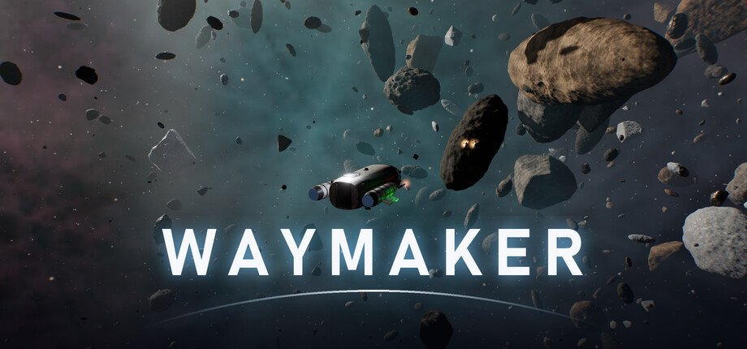
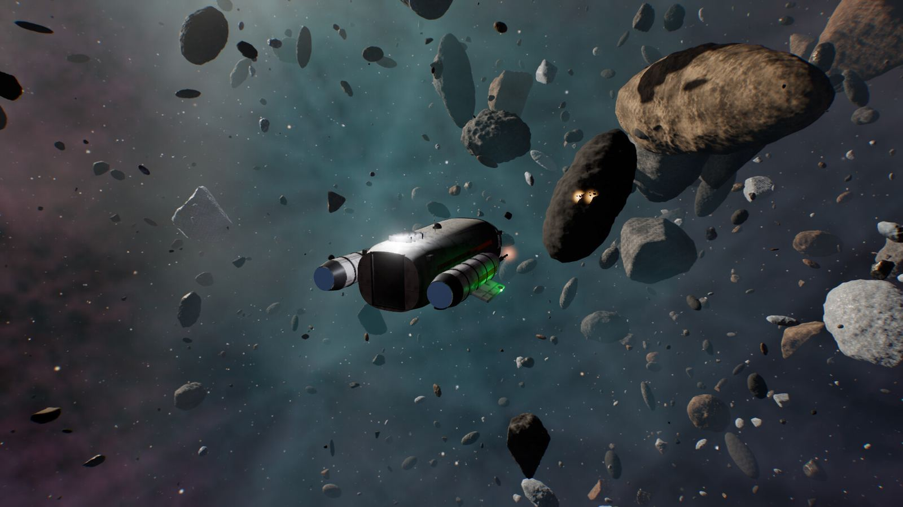
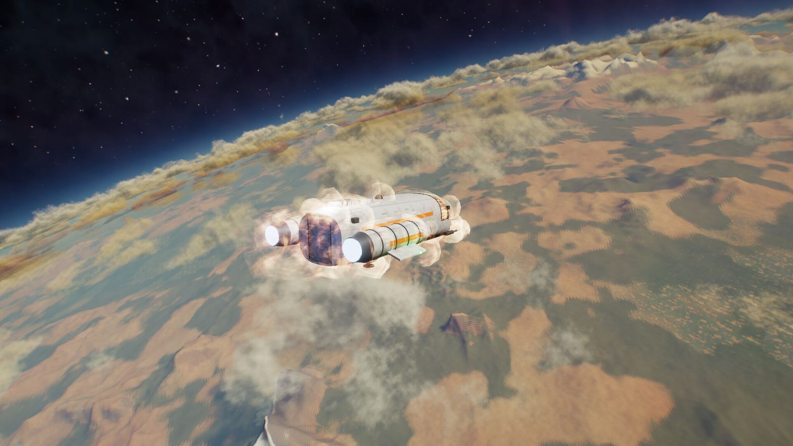
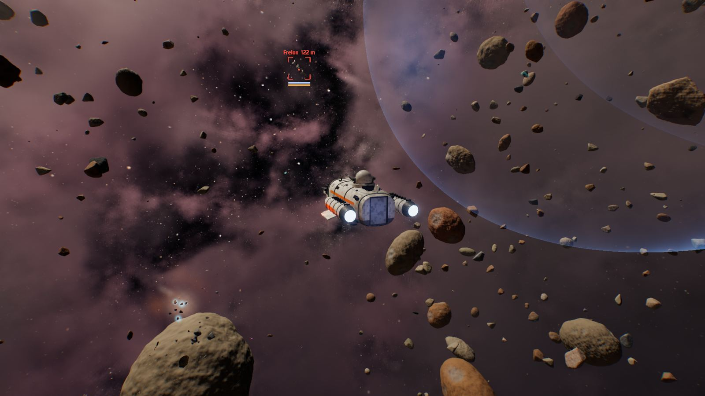
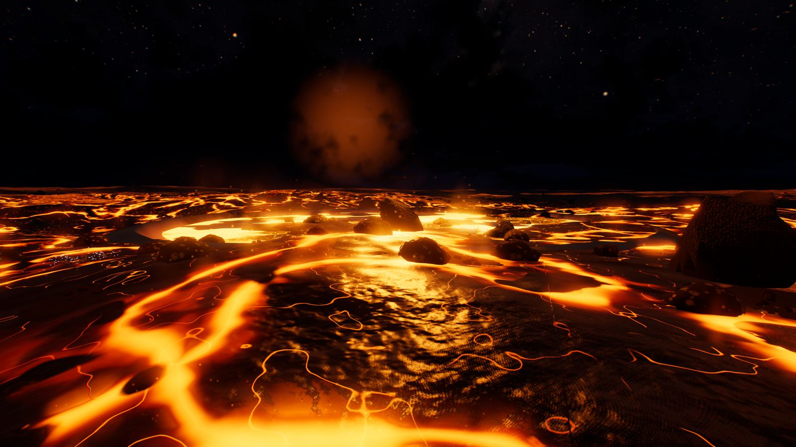
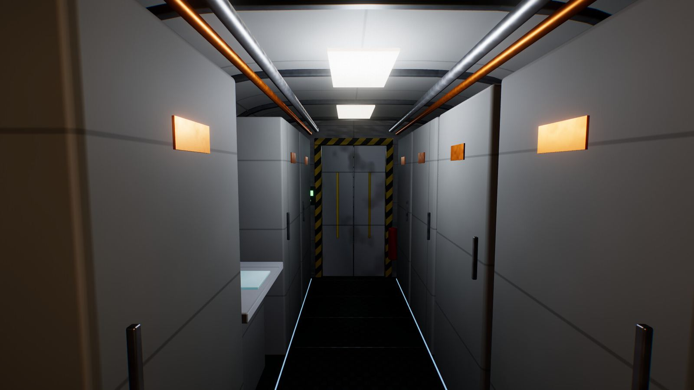
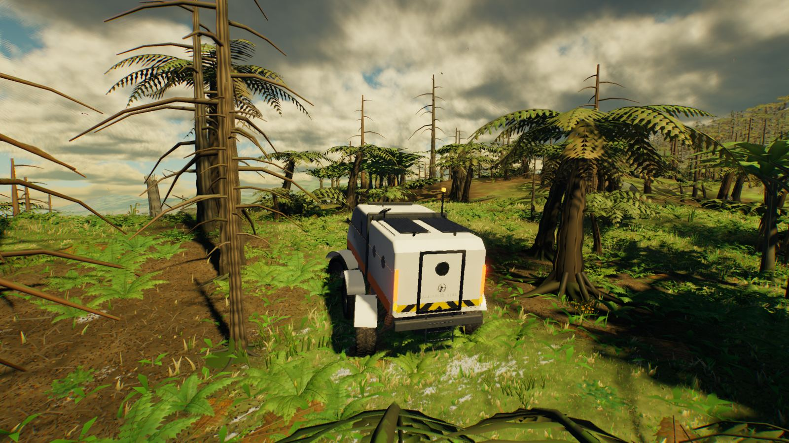

Waymaker
Pilotez seul un vaisseau d’occasion au-delà des étoiles cartographiées. Plongez de l’orbite à travers les nuages d’un monde sans nom, posez-vous où vous voulez et sortez par le sas. Relevez ses fleuves, ses grottes et ses espèces, nommez-le, revendiquez-le… ou allez trop loin pour en revenir. Fly a second-hand ship alone past the edge of the charted stars. Dive from orbit through the clouds of a world nobody has named, land anywhere and step out of the airlock. Chart its rivers, caves and species, name it, claim it… or go too far to ever come back.
Bande-annonceTrailer Waymaker
Au-delà de la dernière route de saut, la carte est blanche.Past the last jump route, the map is blank.
La colonisation de l’espace n’a qu’une génération. La Compagnie paie des éclaireurs indépendants pour passer les premiers : relever les systèmes, baliser les concessions, nommer ce qu’ils trouvent. Les convois suivront vos cartes. Vous volez seul, dans un vaisseau d’occasion, avec votre IA de bord et vos dettes pour tout équipage. Humanity has only been settling space for a generation. The Company pays independent scouts to go in first: survey the systems, stake the claims, name whatever they find. The convoys will follow your charts. You fly alone, in a second-hand ship, with your onboard AI and your debts for crew.
Waymaker est en développement, sur son propre moteur. Tout ce qui est montré ici est jouable aujourd’hui ; la liste ci-dessous distingue ce qui existe de ce qui viendra. Waymaker is in development, on its own engine. Everything shown here is playable today; the list below separates what already exists from what is still to come.
CapturesScreenshots






Jouable aujourd’hui (pré-alpha)Playable today (pre-alpha)
- Le vol en cockpit : six axes, inertie, assistance de vol, à la souris ou à la manette.Cockpit flight: six axes, inertia, flight assist, mouse or gamepad.
- Des systèmes stellaires générés procéduralement, reliés par des routes de saut.Procedurally generated star systems, linked by jump routes.
- Une descente continue de l’espace au sol, sur des planètes à l’échelle réelle et à l’horizon courbe.A seamless descent from space to the ground, on real-scale planets with a curved horizon.
- Cinq types de mondes : désertique, primordial (avec ses îles), glacé, de lave, océanique.Five world types: desert, primordial (with islands), ice, lava, ocean.
- Le relief, les fleuves, les lacs et les grottes ; la météo et les saisons.Terrain, rivers, lakes and caves; weather and seasons.
- Une flore et une faune réparties selon le climat, l’altitude et l’eau.Plants and creatures placed by climate, altitude and water.
- À pied : dans le vaisseau, même en vol, sur les astéroïdes et sur les planètes ; la plongée sur les mondes océaniques.On foot: aboard your ship, even in flight, on asteroids and on planets; diving on ocean worlds.
- Le rover et la moto, une épave à explorer, des vaisseaux générés que l’on parcourt à pied.The rover and the bike, a wreck to explore, generated ships you can walk around.
- Le scanner, le carnet de terrain, le minage, la fabrication et les améliorations.The scanner, the field journal, mining, crafting and upgrades.
- Des contrats, des courses, des combats contre des vaisseaux et des tourelles.Contracts, races, and combat against ships and turrets.
- La coopération en ligne.Online co-op.
PrévuPlanned
- L’histoire : seize missions, et de vieilles balises qu’aucun registre ne connaît.The story: sixteen missions, and old beacons no registry knows about.
- Le carnet complet et les succès Steam.The full field journal and Steam achievements.
- D’autres types de mondes, de nouvelles espèces.More world types and new species.
- Une flotte et des batailles de grands vaisseaux.A fleet and capital-ship battles.
- Et, au bout du voyage, un endroit où s’installer.And, at the journey’s end, a place to settle down.
En brefAt a glance